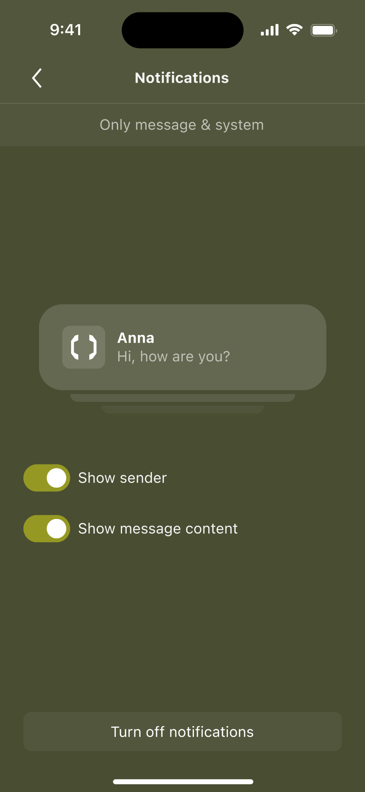
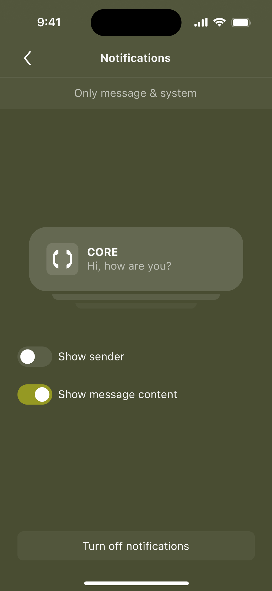
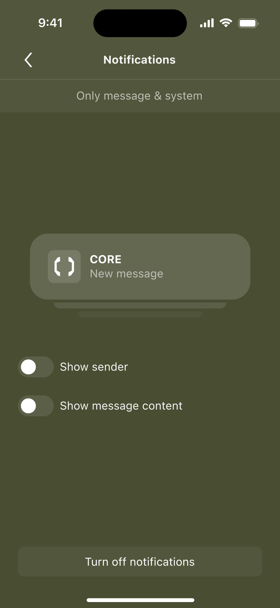
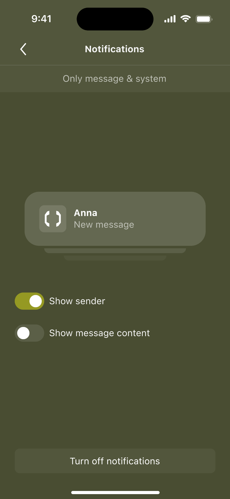
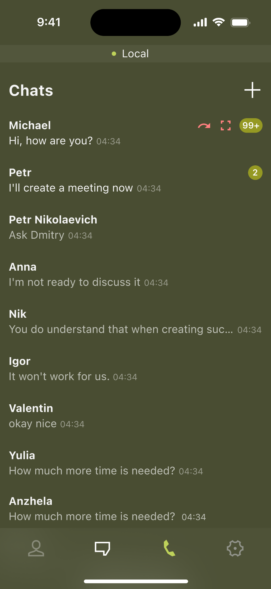
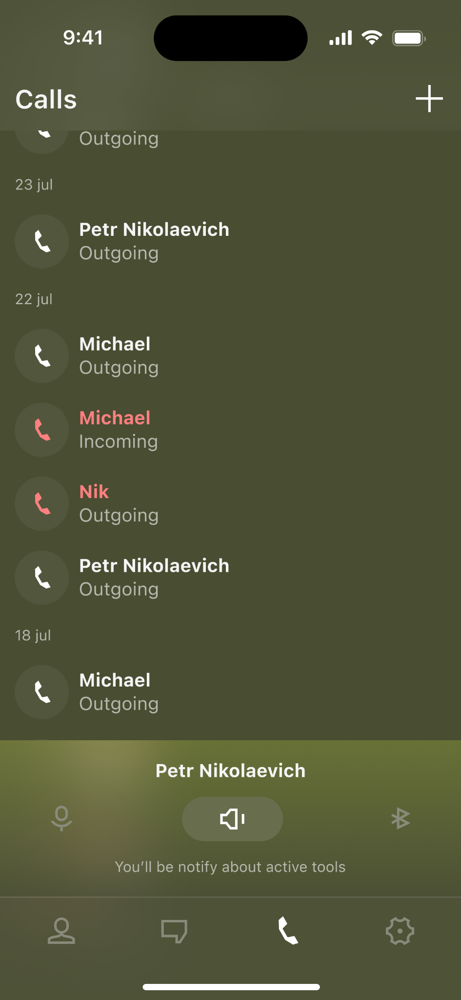

MVP приватного мессенджера
Проект
App Store
Год
2026

Проект
App Store
Год
2026
Вводное
Задача
По сути, формат был ближе к digital concierge: решения принимались не для «среднего пользователя», а под его сценарии, требования и привычки.
Клиент
Клиент — частный бизнесмен. Вся коммуникация по проекту шла через его менеджера и личного ассистента.
Дискавери
Перевёл запрос клиента в продуктовые требования
| Запрос клиента | Требование к продукту |
|---|---|
| Не знает, кто я | Без регистрации, телефона, имени и email |
| Не знает, о чём я говорю | Без доступа к содержимому чатов и файлов |
| Хочу контролировать безопасность общения | Видны действия собеседника в чате и звонке |
В итоге получился привычный мессенджер с надстройкой в виде усиленной безопасности.
Одной приватности было недостаточно. Клиент хотел собственный закрытый продукт: управлять кругом пользователей и получить интерфейс, сделанный под себя
| Запрос клиента | Требование к продукту |
|---|---|
| «Хочу сам решать, кто пользуется приложением» | Закрытый доступ и возможность управлять участниками |
| «Хочу свой визуальный дизайн» | Собственный визуальный язык и интерфейс |
Поэтому готовый мессенджер мог быть референсом для отдельных механик, но не заменял сам продукт.
Сравнил privacy-first мессенджеры по ключевым требованиям — ни один не подходил целиком. Ближе всего оказался Briar: контакт в нём можно добавить после личной встречи через QR — без поиска по телефону или публичному профилю
| Что показал референс | Почему это важно для CORE |
|---|---|
| Контакт можно добавить после личной встречи через QR | Знакомство можно оставить офлайн |
| Нет поиска по телефону или публичному профилю | В приложение переносится уже установленное доверие |
Этот паттерн подтвердил главное: знакомство можно оставить офлайн, а в приложение переносить уже установленное доверие.
Привычные сценарии мессенджера свёл к трём зонам риска
| Зона риска | Что проверяем |
|---|---|
| Коммуникация |
Добавление контакта
Чаты и файлы
Условия звонка
Системные уведомления
|
| Подключение |
Защищённое соединение
Работа из разных стран
|
| Доверие и контроль |
Статус защиты
Принципы безопасности
Локальные данные
|
Так определил точки, где привычный сценарий мессенджера требует дополнительной защиты.
Если у пользователя нет аккаунта, сервис не должен получать его имя. Но самому пользователю всё равно нужно понимать, с кем он общается
| Риск | Как снижаем риск |
|---|---|
| Имя из профиля становится персональными данными на стороне сервиса | Не запрашиваем и не храним имя |
| Технический ID не помогает понять, кто перед тобой | Пользователь сам задаёт локальное имя контакту |
Имя существует только для самого пользователя: сервис не получает персональные данные, а контакт остаётся узнаваемым.
Даже защищённая переписка может выйти за пределы разговора — через скриншот или пересылку
| Риск | Как снижаем риск |
|---|---|
| Собеседник делает скриншот незаметно | Показываем системное сообщение о скриншоте |
| Собеседник пересылает сообщение в другой чат | Показываем системное сообщение о пересылке |
Действия, которые выводят содержание за пределы разговора, становятся заметны обоим участникам.
Во время разговора собеседник может менять условия звонка, а второй участник этого не заметит
| Риск | Как снижаем риск |
|---|---|
| Собеседник включает или выключает инструменты звонка | Показываем индикацию активных инструментов |
Изменения условий разговора становятся видимыми во время звонка.
Даже если само приложение защищено, системное уведомление может раскрыть информацию человеку, который просто увидел экран устройства
| Риск | Как снижаем риск |
|---|---|
| Посторонний может увидеть имя отправителя | Скрываем имя в уведомлении |
| Посторонний может прочитать содержание сообщения | Скрываем текст сообщения |
Уведомление сообщает о новом событии, но не раскрывает ни собеседника, ни содержание сообщения.
MVP
Я собрал MVP вокруг ключевых сценариев клиента. Остальное оставили в backlog: первая версия должна была быстро заменить привычное общение на защищённое.
Сценарии
Я собрал структуру и тексты онбординга вокруг одной задачи — показать, где пользователь сможет контролировать свою безопасность


Заменил поиск и адресную книгу на офлайн-сценарий: один пользователь показывает QR, второй сканирует его — после этого контакт создаётся напрямую


Продумал статусную модель, которая покрывает весь цикл соединения.


Продумал восстановление соединения и fallback-сценарии на случай сбоев.

Даже защищённый чат может раскрыть себя через уведомление. Поэтому пользователь отдельно управляет показом имени и текста и сразу видит результат в live-preview.




| Что клиенту нужно делать | Где риск в мессенджерах | Что нужно в MVP |
|---|---|---|
| Добавить человека из закрытого круга | Контакт создаётся через номер, username или адресную книгу | Альтернативное решение без персональных данных |
| Вести переписку | Обычный чат раскрывает активность и прочтение | Без индикатора прочтения и статуса online |
| Отправлять документы и фото | Файлы уходят через привычные, но небезопасные каналы | Шифрование содержания чатов |
| Звонить по важным вопросам | Обычный звонок не даёт контроля над условиями разговора | Индикаторы speaker, mute и Bluetooth |
| Контекст | Где риск в мессенджерах | Что нужно в MVP |
|---|---|---|
| Клиент может находиться в России или за рубежом | Один маршрут подключения может быть нестабильным | Proxy |
| Что важно для продукта | Где риск в мессенджерах | Что нужно в MVP |
|---|---|---|
| Приложение передаётся дальше закрытому кругу | Новые пользователи не обязаны верить клиенту «на слово» | Онбординг с принципами защиты и security-лейблы |
| Пользователь хочет понимать, что защита работает | Безопасность выглядит абстрактно | Статус защищённого соединения |
| Пользователь хочет убрать следы устройства | Непонятно, что остаётся после удаления | Удаление локальных данных |
Вместо телефона, username или поиска — один пользователь показывает QR, второй сканирует его камерой. После сканирования новый чат сразу появляется в списке
Показать QR → Сканировать → Чат создан
Никаких персональных идентификаторов и адресной книги: доверие устанавливается между людьми офлайн, приложение только создаёт связь
Если у пользователя нет аккаунта, сервис не может брать имя из профиля
| Варианты | Путь | Риск |
|---|---|---|
| Публичное имя | Пользователь задаёт имя при входе | Сервис получает персональные данные |
| Технический ID | В чате виден набор символов | Непонятно, кто «перед тобой» |
| Имя от собеседника | Человек сам передаёт своё имя | Имя уходит в систему |
| Локальное имя | Пользователь сам называет контакт | — |
Контакт называет сам пользователь. Сервис не получает имя, а пользователь может скрыть реальную связь за нейтральным названием.
Техническое решение согласовывалось с разработкой. Мне было важно понять принцип
| Варианты | Путь | Риск |
|---|---|---|
| Обычное серверное хранение | Сообщения хранятся на сервере | Сервис потенциально видит данные |
| P2P | Устройства общаются напрямую | Сложнее стабильность и доставка |
| Сквозное шифрование | Сообщение шифруется у отправителя и расшифровывается у получателя | — |
Команда разработки выбрала сквозное шифрование. Сообщение закрывается у отправителя, проходит через сервер закрытым и открывается только у получателя.
Задача одна — всегда быть под прокси. Прокси и есть главный уровень защиты
Так, чтобы пользователь всегда оказывался под прокси.
Так, чтобы пользователь всегда понимал состояние соединения.
Здесь было важно не просто показать QR и кнопку скана
А провести каждого участника по сценарию и сразу дать понятную реакцию интерфейса. Иначе пользователь мог бы запутаться: код уже считан или нет, кто делает следующий шаг и с кем сейчас создаётся связь.
В MVP я не стал делать добавление сразу нескольких человек. Правило получилось простым: два QR — одно подключение.
На системный интерфейс звонка повлиять невозможно. Поэтому состояния инструментов собеседника решили показывать внутри приложения.


Пользователь может продолжать ходить по приложению во время разговора. Если собеседник меняет состояние звонка, об этом сообщаем прямо на текущем экране.
Не меняли сам звонок — добавили поверх него недостающий слой контроля.
Брендинг
До работы с цветом, типографикой и графикой зафиксировали четыре границы для визуального языка.
| Что задал клиент | Что это значит для дизайна |
|---|---|
| Military | Взять собранность и тактический характер направления, не превращая интерфейс в буквальную военную стилизацию. |
| Не второй Telegram | Не повторять визуальный язык привычных мессенджеров — продукту нужен собственный характер. |
| Партнёры в других странах | В дальнейшем продукт станет мультиязычным — типографика должна поддерживать разные языки и письменности. |
| iOS и Android | Типографика и визуальная система должны одинаково уверенно работать на обеих платформах. |
Military должно считываться через тон и детали, а продукт — иметь собственный характер.
Разложил заданное направление на визуальные принципы.
| Признак | Что можно взять в продукт |
|---|---|
| Тёмная палитра | Графит, хаки, оливковый, песочный, приглушённые акценты |
| Тактическая графика | Сетки, координаты, схемы, маркеры, технические линии |
| Собранная композиция | Больше структуры и контроля |
| Жёсткая иконка | Простые формы, углы, контур, без мягкой дружелюбности |
Military стало не декором, а направлением для визуального кода — тёмного, точного и собранного.
Хотел добавить в интерфейс анимацию, чтобы визуальный язык ощущался современнее и технологичнее.
| Ограничение | Что это значит для графики |
|---|---|
| Мобильное приложение | Графика должна мало весить |
| Анимация | Должна хорошо работать в движении и собираться средствами кода |
| Military-направление | Нужен технический, системный характер |
Одним из подходящих направлений стала символьная графика — знакомая по визуальному языку «Матрицы» и Ghost in the Shell. Она понравилась клиенту.
Откройте сайт на компьютере — так макеты сохранят все детали.